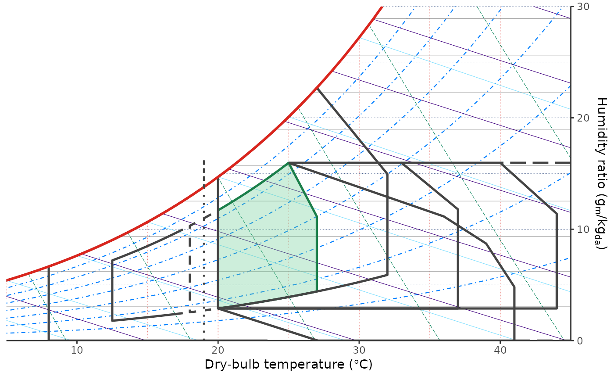
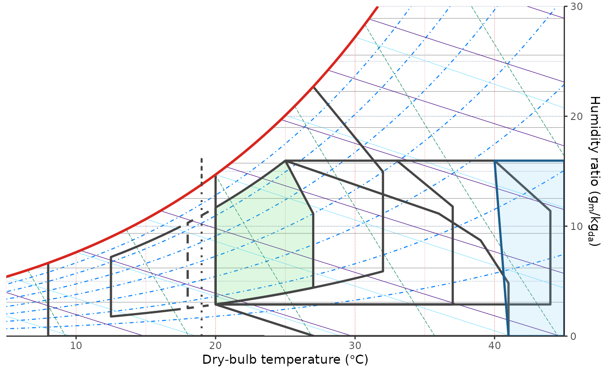
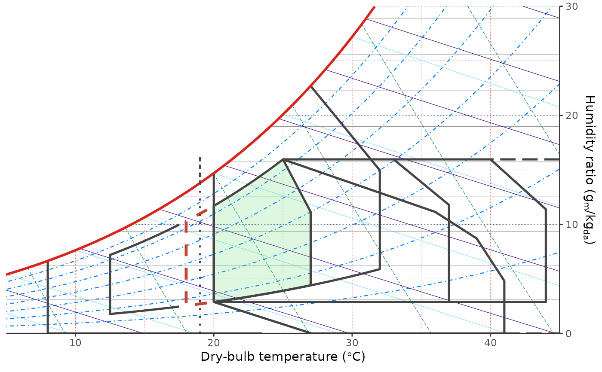

element_comfort_zone() creates a small style object for comfort strategy
zones. It is used by geom_comfort_givoni() through the zone_style
argument to override Marsh-style defaults for individual zones.
Arguments
- fill, colour, color, linewidth, linetype, alpha, linejoin
Zone drawing properties. Values left as
ggplot2::waiver()inherit the layer default.
Examples
# Fill and outline the comfort zone with custom colours.
ggpsychro(tdb_lim = c(5, 45), hum_lim = c(0, 30)) +
geom_comfort_givoni(
show_labels = FALSE,
zone_style = list(
comfort = element_comfort_zone(
fill = "#6FCF97",
colour = "#1B7F4A",
alpha = 0.35
)
)
)

# Emphasize the air-conditioning region with a light fill.
ggpsychro(tdb_lim = c(5, 45), hum_lim = c(0, 30)) +
geom_comfort_givoni(
show_labels = FALSE,
zone_style = list(
air_conditioning = element_comfort_zone(
fill = "#7BC8F6",
colour = "#1B5E8C",
alpha = 0.18,
linetype = "solid"
)
)
)

# Restyle a line-only region without filling it.
ggpsychro(tdb_lim = c(5, 45), hum_lim = c(0, 30)) +
geom_comfort_givoni(
show_labels = FALSE,
zone_style = list(
winter = element_comfort_zone(
colour = "#C44536",
linewidth = 1.2,
linetype = "dashed"
)
)
)
